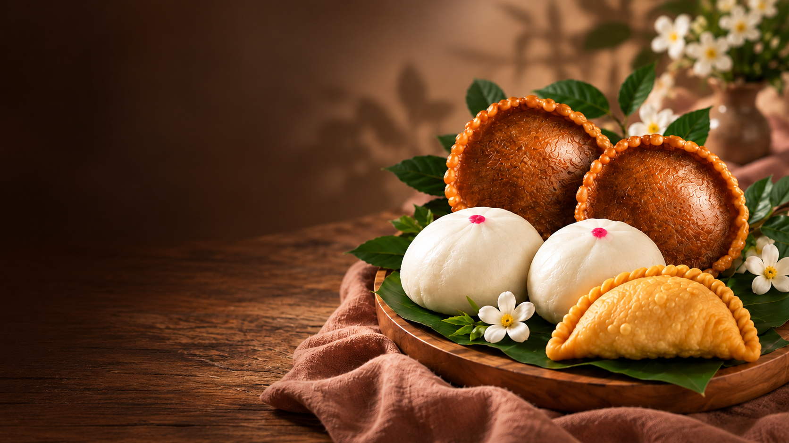

Camilan Tradisional
Dina Cake Untuk Setiap
Momen Spesial
Kue tradisional dengan rasa autentik untuk setiap momen berharga Anda.
Lihat KueGambar AI untuk prototipe development. Bukan foto produk Dina Cake dan belum berizin publikasi.
-
Rasa Autentik
Kelezatan tradisional pilihan.
-
Untuk Segala Momen
Cocok untuk keluarga, acara, dan hadiah.
-
Pilihan Beragam
Kue harian hingga pesanan acara.
-
Pemesanan Mudah
Proses sederhana dan jelas.
Kue Harian
Konten produk belum ditampilkan.
Pesanan Acara
Konten menu acara belum ditampilkan.
Cara Pemesanan
Alur pemesanan belum ditampilkan.
Tentang Dina Cake
Cerita usaha dan aset menunggu persetujuan.
Kontak & Footer
Informasi kontak belum ditampilkan.